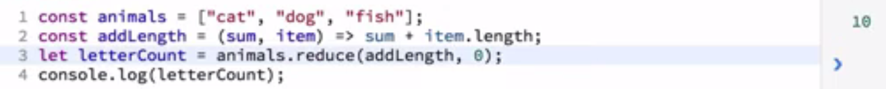

-
JS is a very versatile language, can be used in a:
- Imperative style
- OO style
- Functional style
-
- We were defining global vars, outside the functions where they are assignbed their values.
- We use independent funcitons
- We pass values from one to other function, and they are redefined.
- Native JS and DOM methods mmixed together.
- Unclear what is happening outside of the script that may affect at the values we are worling with, ror itf other functions may be relaying on those values.
- May be the function names are repeated in other loaded scripts.
- Brilttle code, that won’t worl in a different context (for example, if we don’t define those global vars first).
-
- It’s good to switch to OO, specially in some env where different people are sending scripts to be loadad in the browser.
-
ADVANTAGES
- Allows data to be treated as object to be passed around the code.
- Objects have methods for manipulating them, and also their instances.
- Messages can be passed artound to one object to another.
- Props of objects can either be hidden or shared allowing encapsulation > security. One function doesn’t interfere with another.
- Allows to build up functionality of objects by adding to the abilities of an object to Composition.
- Inheritance: enhancing ..
-
Work with objects takes advantage of encapsulation, inheritance:
-
Use, for a defined object, its property .prototpype.
…(), in
order that when
I have
several
instances of that
object I am just using 1 instance of the prototype in
memory.
-
Example: Object SomeText,
// COnstructor
var SomeText = function(textToHandle) {
this.text = textToHandle;
}with two methods:
- .prototpype.capitalize(param)
- .prototpype.capitalizeWods()
-
-
Use, for a defined object, its property .prototpype.
…(), in
order that when
I have
several
instances of that
object I am just using 1 instance of the prototype in
memory.
- Use “use strict” in a limited scope, for example, in a function or inside the definition of an object, since there can be other code not written for this convention, and it can break it.
- Use addEventListener is more versatile than onclick because it can be use for different types of events.
-
DISADVANTAGES
- Methods are taken from prototype, and use properties of the object set with a very simple constructor, which hardens to keep track of what is happening in the code.
-
There are a couple of reasons why looping can be messy:
- Loop like this, relies on having an extra var, counter. It is good to avoid creating extra state you will need to track: avoid creating extra variables.
- The loop is changing vars outside itself, which dificults to know what the code is doing.
- Using of the ‘new’ keyword can create hidden and silent errors.
- The code is still brittle, not portable: it relies on prototype in multiple places, and JS is more complex. Also the front and back end requirements … []. Also for testing, it is improvable.
-
No one is best, it depends on the case.
Functional style:
- takes advantage of the fact that JS allows you to use functions as 1st-class objects: use them as arguments and pass them between functions.
- Encourages to not to make changes to values that are outside of the function, or change the state of app while executing the function
- Functions are independent, and reusable, No reliance on abstract object passed around: we have the vars, passed through. No outside objects that affects to the result inside of the functions.
- We know input and its associated output, regardless of the context. Much easier to unit test, then.
- Code is much more concise.
- Ideally, in the function you are going to describe the problem or solution, not the step-by-step; which is a little bit complex.
EXAMPLE:
COMMENTS:
- Code is much more concise.
- Fuinctions are independent and reusable.
- No reliance on abstract object passed around: we have the vars, passed through. No outside objects that affects to the result inside of the functions.
- Much easier to unit test: we know input and its associated output, then. Regardless of the context.
- We pass a fn to processWords(), and inside processWords() the arg fn IS NOT CALLED AS A CALLBACK BUT AS A PREDICATE FN, INSIDE AN ARROW METHOD AS .map(). There are some JS features and methods we saw at the beginning of the course, they are useful for functional programming, and this is one of them perhaps: it doesn’t LOOP, or passes an array as a final argument of the caller function through a “callback” call, but instead makes an iteration from a “group” method as map(); which is much more efficient. Map() also allows not relying on extra-variables as in a loop.
EXAMPLE with ES2015 syntax:
COMMENTS:
- The code is concise. 4 lines of code
-
No mutable variables. Not used the keyword var or let; defined as const,
which
prevent
changes and worries about it.
One quirk: the handler fn for the event listener has had to be declared with let: with const the event could't find it. - we define the funcitons with implicit return values: we don't have to use the return keyword.
- The block syntax allosw being inmediately invoked.
- Still using "use strict": since we are writing code in a modular way we can limit the efect of that to that module
- The code is Dense: few lines but condensed, if not familiarized with all these sintax
- Anonymous Arrow functions harder to debug.
- May not be clear as self.documenting: mot "self-definer", as it is not so clear to understand.
- Not consistent with old syntax. I.e., this ES2015 syntax (which is this video code), not always compatible with ES5 . You may prefer one or the other to be prevalent.
SUM UP
- IMPERATIVE CODE is easy to follow to top to bottom and see what's happening.
- OO CODE makes sense when you think in terms of objects and how they can pass around data.
- FUNCTIONAL CODE is self-documenting and very concise.
- FUNCTIONAL CODE with with ES2015 syntax is not so self-documenting but the most concise and clean.
-
we can use them as a JS code improvement, regardless of using Functiona programming or not.
- Don't rely on the state of the code they are called from.
- Don't create side effects that alter variables outside themselves.
- Only one result possible for a given set or args.
This means that:
- Pure functions can be called in parallel without altering results.
- Allow for memorization: it allows to store the valoue returned by the function for any given input. If it's called again it finds out if that vcalue has been already calculated and then returns it without going to the process.
- POtential for lazy evaluation: in certain circunstances they may not execute the processs if it is not going to have effect on the external state.
const in ES2015 doesn't prevent of changing that value by push() to an array or objet, or modifying content to array or object from an impure function. See ex. of impure function at 04:00 of 4_Pure_Functions.mp4
TO BE CAREFUL WITH PURE FUNCTION: in JS context, you may think you are passing always the same value to a pure function, and it is not being so (it those values are passwd as vars and we can't see that those var values have changed). See ex. at 06:00 of 4_Pure_Functions.mp4
-
In JS, the type of a fn is the same than of an object; thus,
- a function can be assigned a value,
- a function can also be passed as fn arg
- a function can return another function as return value
This takes us to WHAT'S a HIGHER ORDRE FUNCTION:
- It takes a function as an arg
- It returns a function as a result
- It both accepts a function as argument and returns a function as result
EXAMPLE of a function that returns another fn:
This code repeats twice. Fot avoiding this, we can make a unique function that returns a function, customized as we need for the case:- The way we provide callbacks, which we can always rely on
- Better encapsulation of methods
-
Easier to combine functions for more complex funcitonality
-
Versatile for creatinn of sets of related functions
-
Recursion is a function that calls itself, from within. Because of that, the function is a HIGHER ORDER function (CJP: because the way the function calls itself is 'return call()', as seen in the next video; that means, the funciton returns another function).
-
-
For loop:
We have some issues:
- Lots of local state created: var result is changing in each lap.
- State is created and destroyed along the way: var counter, which after the loop is destroyed and we don't use it any more
- While Syntax is famiiar, it's less easy to read due to the way the for loops manage their conditions.
-
While loop:
We have some differences:
- It is cleaner: The count is defined outside the loop, which makes easier to reason about.
- The terminal state (point in which our loop will exit) is very clear and emphatized. This will be very useful for us, when starting with the actual recursion
-
-
- We saw in the last point the way in which a While loop iterates. From this:
-
Let's think in the while loop. And let's think about ways we can iterate
without
looping.
The way to think about this is trying to
reproduce the effect of a While loop but whitout a While loop.
-
We have it here:
-
From here, we can see which are the elements of a recursive function:
-
THE MOST IMPORTANT: a TERMINAL CONDITION. which is tested first of all in the function
It is the if statement.There, we exit the function
Another example of TERMINAL CONDITION, more RIGHT AWAY (and clear):
- CJP: the second needed element is the modifier of the value which is tested in the TERMINAL CONDITION. -for not looping infinitely.
-
-
The ADVANTAGES of using recursion are:
- Cleaner code, than a For or While loop
- Stateles operation: No change of the values of varibles along the way. No side effects: nothing outside of the function is changed.
-
The DISADVANTAGES of using recursion are:
- May be confusing for people unfamiliar with the concept.
-
ATTENTION: High memory use for deep recursion
Needed to consider if Proper tail call optimization is supported by consumers of the app, and others, to decide to use or not RECURSION.
- The technique called "Proper tail calls" (are an options) demands for using it efectively to make recursion code a bit more complex.
- Proper tail call can be optimized. But it is not broadly supported.
- Proper tail call can be optimized in order to avoid the deep memory issues. But it is not broadly supported.
-
Technique of Proper tail call:
See this code:
Here, differently than the previous code did, each return doesn't depend on any other further return of the function (as it was so in the previous code: "return (number, call());");
That meant (previous code) that the stack kept each returned value for being able to do the inverse way once the end of recursion was reached: passing that last result returned to its call, then obtaining that call result and passing it at the time at the previos cull, and so on. All there calls are stored in the stack memory and it't the reason of the deep memory issue.
Instead, with this last code, we have a "helper" function call facterIt(), which handles a param named accumulator that stores the values and they don't have to be stored in the stack.
The Proper tail call technique consists on the recursive function can rewrite vaules to the last memory frame of the stack, and to do that you must ensure the recursive call itself is in the tail position of the fucntion (in the previous example, it wasn't, since the last position in the function were the calculation inside the return statement).
Then, we can see that in the previous code the facturial() function is not implementing the proper tail call. It returns a factorial() recursive, but it is not being returned by itself but in the context of a calculation.
CJP: Inconsistent info in this course about the support of the technique Proper tail optimization by the browsers and platforms (though it is supposed to be part of ES2015). Also, a seach in caniuse.com didn't find any result by "tail-call" and similars (2021-08-20). Also, it seems something TRIVIAL that any browser could support: it's just calling a function (helper) from another one (main). THen:
¿?¿?
-
- Currying is the way of consolidate the code of multiple functions that may share the same code but may take different args each one of their versions generated. GOOD FOR MAINTAINABILITY, NOT HAVING TO CHANGE SEVERAL REPEATED CODE EACH TIME.
-
when you call afunction you have to pass ALL of their arguments. May be the same every time you call it, as for example in this code:
We can factor out the "Hello" part from the function. Though this supposes some flexibility missing: the function just can say "Hello".
-
But VERSATILITY is what we pursuit when using functions. Then, we can create another functions:
-
This means many more funcitons to maintain. And, what if we want to add some testing to our code? We need to repeat it in every single function. A lot of extra-code and redundancy in our code. See:
-
Currying comes to the rescue:
We can have:- Multiple functions
- Simple arguments
- Customizable
- Shared code
We see how Next:
-
-
A simple curried funciton returns a function that is waiting for a missing argument:
The return function has type testing. The curried function has a built-in type testing.
All the point of the inner funciton is to return just greeting or name.
MORE: The inner function has to be anonymous, in order to be able to receive its param. See the .js code, where the commented code in '// ********* Currying with inner function being not-anonymous function' would give the error 'iGreetSomehow is not a function', since this way of passing a function with a specific param needs an anoymous fn inside (a named fn could be used with callback()).
THE IMPORTANT THING:
- we have all of our tech checking in our greedCurried()
-
In order to create a custom version greeHello(), we just have to
- pass the string "Hello" to greedCurried()
- assign that to a new cosntant and that becomes the function that we execute with the name we want to send a greeting too.
- This means: the custom function greeHello() EMBRACES the common function greedCurried(), by having it as argument and adding a own 'custom' argument 'Hello' which is catched as param by the anonymous function in the code -it comes outside of the EMBRACED greedCurried(), thus the variable 'name' is not defined inside it.
- IF we just wanted to send to the function the value 'Hello', we wouldn't be seeing the value of Curring.
-
THE POINT IS: now, it's easy for us to create a whole set of functions that will share this code but each will prefer a set of custom functionality. See:
- As we saw in previous MODULE 1 > HiIGHER ORDER FUNCTIONS, and MODULE 2 > RECURSION, Currying uses the ability of the HIGHER ORDER FUNCTIONS to return itself a function.
Here the code and Results:
-
Call with both args:
-
Call with just greeting arg:
-
Call with just name arg:
-
-
Deep currying, for variadic functions (functions with more than one argument we pass in)
What if we want to be able to customize any element of the greeting sentence?
We would do that with typical JS this way:
How could you curry this?
[COMPLETAR]
-
[COMPLETE]
-
[COMPLETE]
-
- The traditional JavaScript loops allow to browse an array and make operations over each item.
-
THE PROBLEM:
- Unlike the Funcitonal paradigm, conditional-control loops, unlike filter() map() and reduce() methods, often alter variables outside of the loops, and also require variables inside of the loop to perform that function properly. These loops-functions by creating some state, define a condition for changing the state and terminate when that state is achieved.
-
With ECMAS5 > alternatives to looping that are more functional and cleaner: map() reduce() filter().
These methods operate over an array, and output a new set of values, KEEPING THE ORIGINAL ARRAY UNALTERED.
-
Produces a new array with modified values from an existing array (which keeps unmodified).
We can also usea PURE function: pass a function as argument where we return the operation with each item. The getLength() function here is a pure function:
IN FACT, A GOOD MAPING FUNCTION IS A PURE FUCNTION:
- it takes a single value of the type in the array being mapped.
- It operates on that value without creating side-effects.
- it Always produces the same result from the same input value.
- it returns a value of the expected type in the new array -because every element is the type the function returns.
- Don't alter any variable outside of its own scope.
- A NICE FEATURE: The pure function can be used without modification in other contexts.
-
A LITTLE BIT TRICKIER: The term
'functor' is a Functional programming
term that some people throwm around, but the cool thing
is that
- it is simple element that holds a set of values
- it is simple element that holds a set of values and implements a map function to operate on each element
- Its map function return a functor of the same size
- As of ES5, the JS array is now officially a functor.
-
map() with array of Objects:
let mapped = myArray.map(x => ({
id: x.id,
nameCustomerProject: x.nameCustomerProject,
nameTask: x.nameTask
}));
-
Produces a sumarized result across all of the values from an array.
- Operates on eacho itenm on the array
- Maintains a running total
- Optionally set an initial value and type for the running total
- Return a new value from the set of operations
- Leave the original array unbchanged.
- Don't alter state of anything outside the array being returned
- Don't relay on states outside of the array being proccesed
It USES AN ANONYMOUS INLINE FUNCTION that counts with two parameters:
- accumulator
- item
Optionally the anonymous function sets the initial value of the accumulator, thanks to the JS feature of type conversion and operator overload in JS. It's optional unless you need to control the type or the value at the beginning of your operation in order to ensure you get the result you where expecting.
IN MOST CASES, IT IS A GOOD IDEA TO SET IT. See:
The reason why the value got is "cat34" is the way JS overloads the addition operator: accepts string and numbers, but if one of the value is a string, the addition operator is going to treat the result as it is going to be a string.
And in this case, as we didn't set an accumulator initial value, the operator assumes the fiors value is going to be the fist one set for the sum, and since the first value is 'cat' it assumes that the '+' operator should be used to add together string values and to return a string.
The reduce function can be tricky to read. For that reason our trick is putting out the PURE anonymous function and giving it a name . Similarly to the case of map():
In Functional programming we find this trick of pulling out anonumous inline functions, giving it a name, and making sure they are pure (as by testing with different values as the previous example; this means sometimes to have to specify the accumulator's init value), is part of what makes Functional programming so much easy to read and to maintain.
In Functional programming we find this trick of pulling out anonumous inline functions, giving it a name, and making sure they are pure (as by testing with different values as the previous example; this means sometimes to have to specify the accumulator's init value), is part of what makes Functional programming so much easy to read and to maintain.
reduce() SUM UP:
- A good reduce() function is always pure.
- It takes two arguments: accumulator, value
-
Allows us to limit the set of elements in an array and return a new subset of those elements in a new array.
One of the problems of traditional loop for filtering:

The problem are the states handled: animalsLength variable, threeLetterAnimals, count. The problem is that we dfon't either want the for loop at all.
With filter(), we can take a functions that returns a bool value as the condition:

Now, as done for map() and reduce(), we can make the same: we can pull out a name function from that anonymous fnction for making the code cleaner and easier to read:
The type of functions that we are going to be able to pass to a filter() method are Pure functions
-
You probably have heard some performance concersn about these methods. Loops currently perform much better in most browsers and in most JS engines in general. THese engines aren't optimized yet, to take advantage of these methods.
But still argue, that it's good to start using these methods today:
- New engines will improve with these methods in mind
- Your bottleneck is almost never in the loop, in JS
- Write for cleanliness, readability, and maintainability
- Optimize for performance only if real-world situations call for it: looking to stadistics, i.e, "yes, my code has a bottleneck, and it is in the loop". There you can skip it out in your backup store
What if we need to use these two methods together?
Example: StudlyCapped string of three-letter words from an array:
We have typical inconvenients of traditional loop. FOr doing it in Functional programming:
- Extract the if condiiton, to a function
- Extract the .char(0).toUpper.... to a function
- Extract the .join() to a functional method
Result:
It is a lot cleaner, and easier to maintain.
But still, we have a lot of vars created inside the function. Though they can't pollute outside, it is possible to do it better: with chaining the methods:
The value is not so much changing or introducing new funcitonality, but cleaner and more maintainable code. And the versatile enough, the chaining, the use of intermediate functions. The key is to be able to use these methods the best for your advantage.
-
- Takes to the next level, and looks how you can build up new functionality yusing small pieces of existing functionallity.
- In order to do that, you are going to want to nest your functions, which is something JS allows you to do. In fact, it has been hitten in some examples you have already seen.
- we know JS allow us to use functions that call to functions. High-order functions can take a function as an argument, or return a function.
- Function methods can also be changed. You can take a serie of pure functions that return a value, and each of them can perform its function independently, and passes a return value to the next one. So the sequence of functions can be called all in a single line.
-
But in addition, JS allows you to pass functions to other functions using nested parenthesis, and when a function followed by parenthesis is being passed to another function, it's not passed as the funciton, but rather value of performing that function:
To notice about is the order of operations: timesTwo(3) returns 6, and then adds 1, and produces 7. When you are reading a function that is nested inside of another function, you should read the function called in the inner parentheses as if it where just the return value, of what you would get if you run that function independently.
Even in the simplest extreme, the order of the nesting matters:
Having switched the order, the result is different. ORDER MATTERS, is the most important point in Composition.
NESTING HAVE NO LIMITS IN JS. What we have done here is essentially compose new functionality within JS by nesting existing functions. We can go as fas as we want, following a set of RULES FOR COMPOSITION:
- Each nested function, small and pure.
- Make sure they pass the returned values
- Make sure that respect the ordfer in which operations are going to be performed.
EXAMPLE:

WHERE DOES THAT GET US? , in a Functional programming paradigm, in order to make JS code a little bit cleaner, mey be get rid of some of those extra parenthesis.
-
It is nesting versions of existing functions, for defining new functions.
So you can define a new function, that behaves like a set of nested functions, using smaller pure functions as components.
This way, we have made composition avoiding a lot of extra parenthesis. But, have created a state variable, and we don'0 want that in Funcitonal programming. Lets fugire out if we can eliminate that intermediate variable: let's use nesting instead:
The solution is Compose function (not currently native to JS)(not currently native to JS) that would take two functions and nest them, producing a new function.
This new function will be the result of applying the compose() function and then passing in the first function and the second function:
compose(firstFunction,secondFunction);
The tricky part is the order in which the operations will be perform, which in nested functions is a very critical aspect.
-
We need to take two fnctions as arguments, and return a composed function that nests them, which is able to take a value that can pass in.
We admit some decisions, we decided the 2nd passed function is the first that performs an operation in the value. This is the common practice in Functional programming, ths 2nd passed is the nested, first in operate [SINCE IT IS MORE CRITICAL TO CHANGE -NO ENTENDIDO BIEN, REVISAR].
Let's test our compose function:
Then we see how easy having a compose function makes it to combine those nested functions and quickly create variations. In fact, we can create a lot of variations using just one line for each one, without reading a lot of redundant code:
-
Things to keep in mind when you are composing:
- Order matters
- Keep track of the return types
- Don't try to compose impure functions
- Who needs to understand your code
- You may want to use a library, in order to bring a pro-boosted well maintained composed functions
-
It rest some problems to the simple compose we created:
-
It dsoesn't handle nested functions that take multiple arguments. And the ability for variatic functions is an important aspect. Let's demonstrate it:
the function divide() takes 2 args. Since we are starting with divide() , we need to pass two values: 4, 2. But we get NaN
-
It doesnt't handle more than two arguments:
JS ignores the last function addOne.
Other problems
Then, knowing how compose works, it's good to a Functional prograaming library that includes a robust compose method that you are comfortable working with.
For example, this is the compose() method of the library Underscore
Other libraries are:
- Ramda
- Underscore
- Lodash
Just consider:
- Size
- Support
- How other methods behave inside the library.
And ultimately, once you have understood how Functional programming works, and you know which utility method you want, choosing a library is the best path to follow.
-